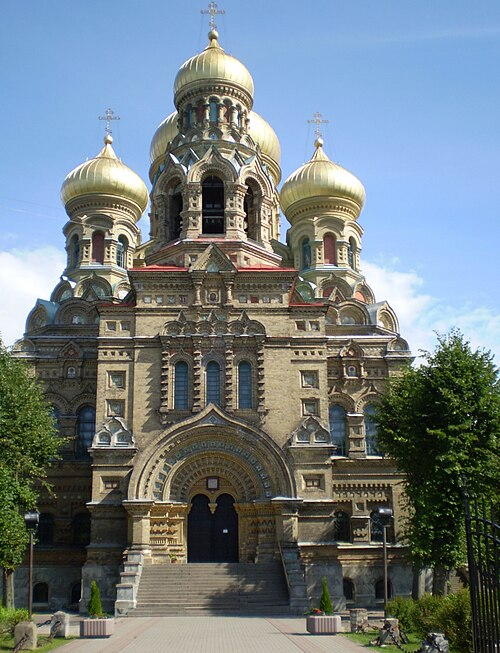
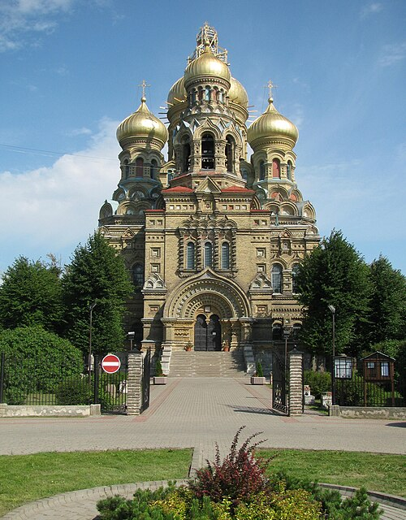

This map shows 11 of the most-searched sights in Liepāja as photo spots, ranked by how often people search for them: Karosta Prison, Karosta, Naval Cathedral, Great Amber and Holy Trinity Cathedral, Liepāja lead the list. Every spot has a pin on the subject and a phone icon showing where to stand, with tips for shooting it on your phone: which lens to use, how to frame it, a settings tip and the best time of day. Directions and Navigate buttons take you to the standing point on foot or by public transport. 3 spots are free to view; the full map is for members.
The 3 free photo spots
1Karosta Prison

Karosta Prison is the red-brick prison building in Liepāja's Karosta area, with a watchtower close to the entrance. In the yard there are some striking outdoor exhibits: a military truck, a field kitchen and an amphibious vehicle. The yard is the one place where the building itself fills the frame, so it is the best choice for a classic picture of the prison.
It does not show the prison. Streets nearby, such as Zemgales iela, are a suggestion for a different kind of photo: weathered brick and Soviet-era buildings, many of them abandoned, which make moody, textured street pictures. Treat this area as a quieter extra stop, then walk over to the prison for the main shot.
At the prison, the red brick, the tower and the vehicles give you plenty to work with. Start wide to take in the building, then move closer for details such as brick texture, the tower or one of the vehicles. Photography is generally allowed in public areas, but check with staff about any restrictions, and confirm the yard is open to visitors on the day.
Where it is: Karosta Prison is in Karosta, a district of Liepāja.
Shooting it on your phone
Lens: Use 2x or the telephoto to pick out details such as brickwork or peeling surfaces. At the prison, the ultra-wide helps if you are close to the building and want the tower in the frame too.
Where to stand: Stand on Zemgales iela (walk through the streets near the prison, reached on foot). Abandoned, weathered brick and Soviet-era buildings in the street, a quieter alternative to the prison's own frontage; these are not views of the prison itself. From here the idea is to photograph weathered brick and Soviet-era buildings in the nearby streets, such as Zemgales iela, not the prison, which lies to the west. For the prison itself, go to the yard of Karostas cietums, where you can frame the red-brick building and the watchtower near the entrance, with the truck, field kitchen and amphibious vehicle in front.
Framing: On the street, use the lines of the buildings as leading lines and turn on gridlines to keep the verticals straight. In the prison yard, put one of the vehicles in the foreground and the brick building and tower behind it, so the picture has depth.
Settings tip: Tap on the brick wall to focus, then slide the exposure down a little so the red brick keeps its colour and the sky does not wash out. Keep gridlines on to avoid leaning walls.
Best time: Daylight is best for the street and the yard. Soft, even light, such as on a bright overcast day, shows the brick texture without harsh shadows.
2Karosta

Karosta is a former naval base on the northern edge of Liepāja, and it is unlike the rest of the city. The base was built between 1890 and 1906 for Tsar Alexander III. Later it became a closed Soviet military town, and at its busiest more than 20,000 people lived here. The Soviet forces left in 1994, and much of the area was left to decay. Today it draws visitors and artists with its fortress ruins, old admirals' houses and rows of block housing.
The best single photo here is of the Orthodox naval cathedral, St Nicholas (Sv. Nikolaja Jūras katedrāle). Its golden onion domes and decorated facade stand out against the plain concrete apartment blocks around it. That contrast is the picture: ornate and gilded in the foreground, grey and plain behind. It also tells you something about the district's history in a single frame.
On a phone, keep it simple. Stand in front of the main facade, on the Studentu rotas iela 7 side, and decide whether you want the whole building or just the domes. Include a little of the surrounding flats rather than cropping them out, because they give the scene its character. If you have time, two other spots in Karosta are worth a look: the canal at Oskara Kalpaka tilts, and the long North Pier, which has the ruined fortress behind it.
Where it is: Karosta is a neighbourhood in the northern outskirts of Liepāja, on the Baltic coast, and covers about a third of the city's area. The cathedral stands among the district's blocks of flats.
Shooting it on your phone
Lens: Start with the default lens (1x) for the whole facade with some of the surrounding flats. Use the ultra-wide (0.5x) if you are close and the building will not fit. Try telephoto (2x-5x, depending on your phone) for the domes alone against the sky.
Where to stand: Stand right at the subject (in front of the main facade, Studentu rotas iela 7 side). The golden onion domes and facade of the Orthodox naval cathedral, framed against the surrounding Soviet-era concrete apartment blocks. Stand on the Studentu rotas iela 7 side, in front of the main facade of Sv. Nikolaja Jūras katedrāle.
Framing: Keep the domes and facade as the main subject, and leave a strip of the plain blocks in the frame so the contrast shows. Turn on gridlines and keep the verticals straight so the building does not lean. If you are near the canal, Oskara Kalpaka tilts gives a waterside view of Karosta as an alternative. The North Pier gives a different shot, with the long breakwater and the ruined fortress behind it.
Settings tip: Tap on the golden domes to set focus, then drag the exposure slider down a little so the gold keeps its detail and the sky does not turn white. Step back and use 2x or more rather than tilting the phone upwards, to avoid converging lines.
Best time: Clear daylight shows the gilding best. Early morning or late afternoon gives softer, warmer light on the domes.
3St. Nicholas Naval Cathedral, Karosta

St. Nicholas Naval Cathedral stands in Karosta, the former naval district in the north of Liepāja. It was built in the style of 17th-century Russian churches, with a large central dome and four smaller domes around it. The designs were by Vasily Kosyakov, and the church was completed in 1903 to serve the Russian navy based here. Its later history was rough: it was used as a gymnasium and a cinema in Soviet times, and it was returned to the Orthodox Church after Latvian independence, with the first service held in December 1991.
For a phone photographer, the main appeal is the outside. The golden domes and ornate walls look very different from the plain grey apartment blocks nearby, and that contrast makes a strong picture. Stand in the grounds in front of the main facade, on the Studentu rotas iela 7 side, and you can fit the whole building and its domes in a single frame. Keep the walls upright by using the gridlines, and leave a little sky above the central dome so it does not look cut off.
The cathedral is an active place of worship and photography inside is not allowed, so plan to take your pictures from outside. Allow a few minutes to walk around the grounds, as the domes look different from each angle.
Where it is: The cathedral is in Karosta, the former naval district in the north of Liepāja. It stands among the apartment blocks of the area, with its main facade on the Studentu rotas iela 7 side.
Shooting it on your phone
Lens: Start with the default lens (1x) for the whole cathedral. Switch to the ultra-wide (0.5x) if you are close and the domes will not fit. Use telephoto (2x-5x, depending on your phone) for the golden domes and the decoration.
Where to stand: Stand right at the subject: the phone icon on the map marks the spot. Stand in the grounds in front of the main facade on the Studentu rotas iela 7 side, a little way back from the building, so the domes fit in the frame. From here you see the golden domes and ornate exterior set against the grey Soviet-era apartment blocks nearby.
Framing: Turn on the gridlines and keep the verticals straight. Include a strip of the grey housing at the edge of the frame if you want to show the contrast with the gilded church. Then take a closer shot of the domes with the telephoto lens.
Settings tip: Tap the golden domes to set focus, then slide the exposure down slightly so the gilding does not turn white against a bright sky.
Best time: Around sunrise and sunset, when the low golden-hour light suits the exterior.
8 more spots for members
These spots are on the map as grey numbered pins. Where to stand, the phone tips, photos and directions for them come with Explorer membership.
- 4Great Amber Concert Hall · members
- 5Holy Trinity Cathedral, Liepāja · members
- 6Liepāja Theatre · members
- 7Liepāja Lighthouse · members
- 9Liepāja Museum · members
- 10St. Joseph Cathedral, Liepāja · members
- 11Monument to the sailors and fishermen perished in the sea · members
- 12Liepāja Station · members
Get every spot with Explorer membership
Explorer opens every spot on every map in the library: where to stand, how to frame it on your phone and how to get there, plus the Xdatrys Maps app with maps saved on your phone for use without signal. $9.99 a month or $59.99 a year; cancel any time.
Join Explorer Compare free and Explorer
Not ready to join?
Get Pocket Lens, our free daily smartphone travel photography newsletter.
Free, and you can unsubscribe at any time. If the form does not show, sign up on our newsletter page.
Questions
What are the top photo spots in Liepāja?
The first three on this map are Karosta Prison, Karosta and Naval Cathedral. They are ranked by how often people search for them. The full map has 11.
Where should I stand to photograph Karosta Prison?
Stand on Zemgales iela (walk through the streets near the prison, reached on foot). Use 2x or the telephoto to pick out details such as brickwork or peeling surfaces.
When is the best time to photograph Karosta?
Clear daylight shows the gilding best. Early morning or late afternoon gives softer, warmer light on the domes.
How do I get to Naval Cathedral?
No public transport stop is listed for this spot; head north from central Liepāja to Karosta and check the map for your route.
Credits
Map data © OpenStreetMap contributors (ODbL); base map built with Protomaps from OpenStreetMap data. Photos from Wikimedia Commons, credited under each photo with their licence. Background reading for the free spots: Karosta, St. Nicholas Naval Cathedral, Karosta (Wikipedia, CC BY-SA). Access rules and opening times change: check before you go.